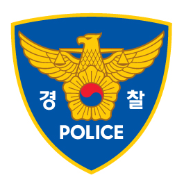

경찰(警察)은 국가의 법질서 및 치안을 유지하기 위한 국가의 권력작용으로 거의 모든 나라에서 국가경찰을 조직하고 있다. 대부분의 나라에서 경찰은 공무원에 속하며, 공무원들 중 행정 집행을 대표하는 기관이다. 따라서 경찰은 국가 행정기관을 뜻하는 말로도 흔하게 쓰이며, 이를 위한 행정활동은 공권력이라고 표현한다.

https://namu.wiki/jump/zqCU1oD8yNIQ0MZg55weeaatyWIr1JEsmYTzQJzirH4hBgKRXx1B9qkWHK%2FR0TyZl3cyDGMQxT1KfVd2SNYpng%3D%3D
https://kmug.co.kr/bbs/board.php?bo_table=design&wr_id=4249809